South Asia
everything here comes with cardamom, or ginger, or both.no stalls like that here. try another market?
- لسی · लस्सी
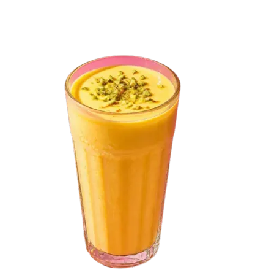
Mango lassi
- मसाला चाय · مسالہ چائے
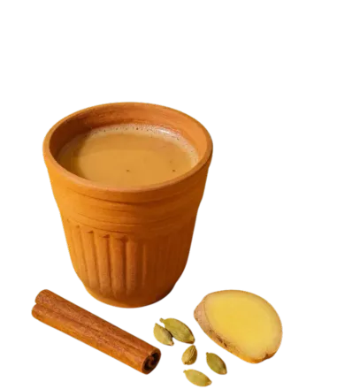
Masala chai
- नींबू पानी
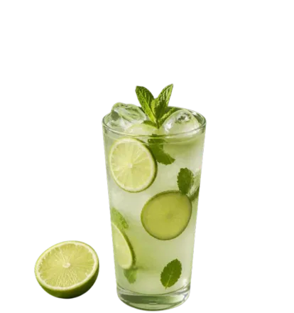
Nimbu pani
- نون چائے
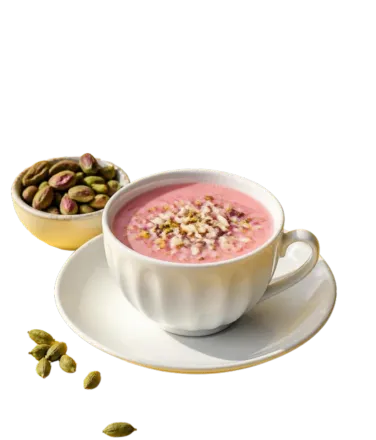
Noon chai
- فالودہ
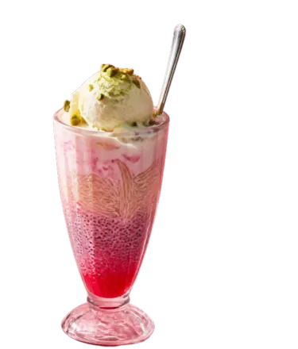
Falooda
- گنے کا رس
Sugarcane juice
- आम पन्ना
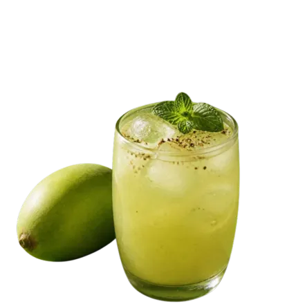
Aam panna
- বোরহানি
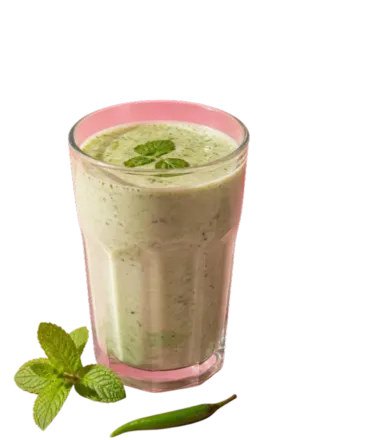
Borhani
- دودھ سوڈا
Doodh soda
- قہوہ
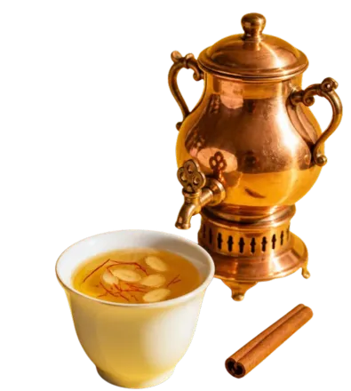
Kahwa
- ஃபில்டர் காபி
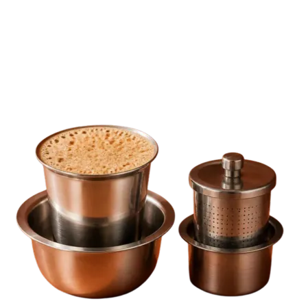
South Indian filter coffee

Mango lassi
لسی · लस्सीMango, yogurt and a pinch of cardamom, blended until it’s basically dessert.
What’s in it- Yogurt · from your fridge

Masala chai
मसाला चाय · مسالہ چائےBlack tea simmered with milk and spices, usually ginger and cardamom, until the kitchen smells right.
What’s in it- Fresh ginger · from the market
- Milk · from your fridge
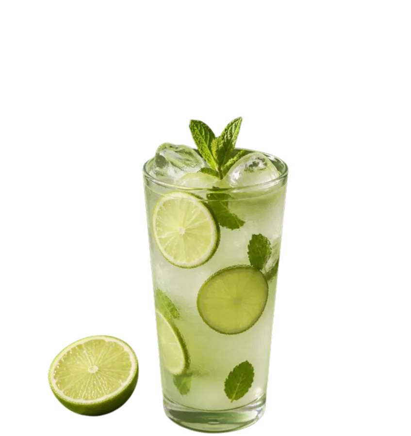
Nimbu pani
नींबू पानीFresh lime, cold water, sugar and a pinch of salt. Always on a hot day.
What’s in it- Sugar · from your pantry
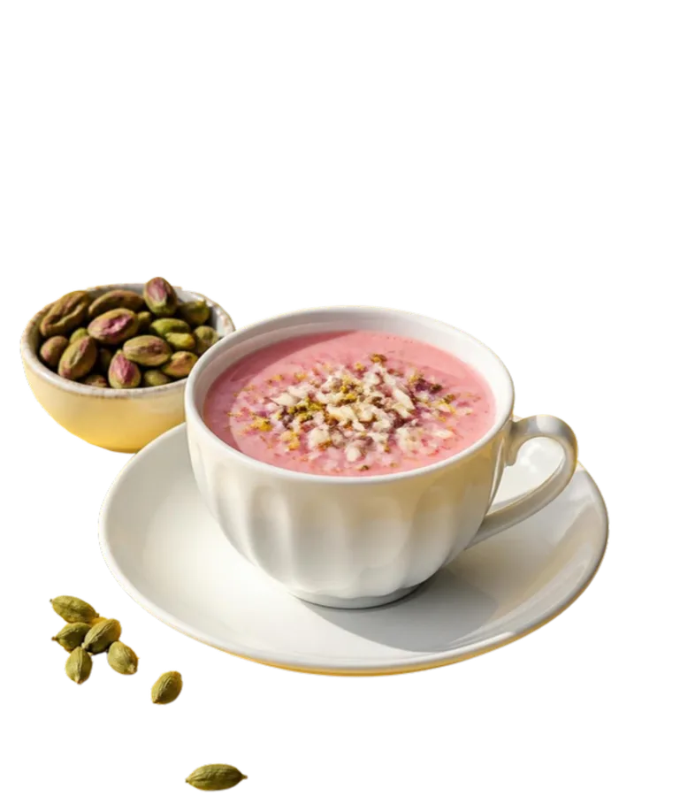
Noon chai
نون چائےGreen tea leaves boiled with baking soda into a dark red-brown extract, then diluted and finished with salt and milk until the cup turns pink. Kashmir’s everyday salt tea.
What’s in it- Baking soda · from your cupboard
- Whole milk · from your fridge
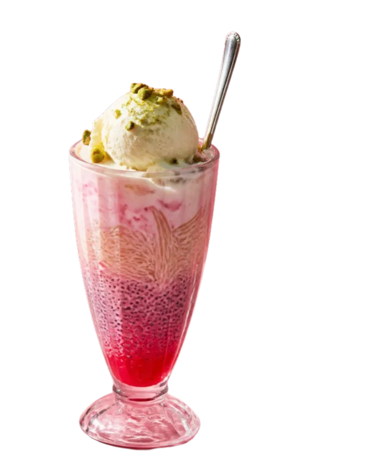
Falooda
فالودہRose syrup, soaked basil seeds, thin vermicelli and cold milk, layered in a tall glass and finished with ice cream and chopped nuts. A drink you eat with a spoon.
What’s in it- Kulfi or ice cream · from your freezer
Sugarcane juice
گنے کا رسFresh sugarcane crushed through a street-side press with ginger and lime, finished with a pinch of salt. Pale green-gold, frothy and gone in a minute.
What’s in it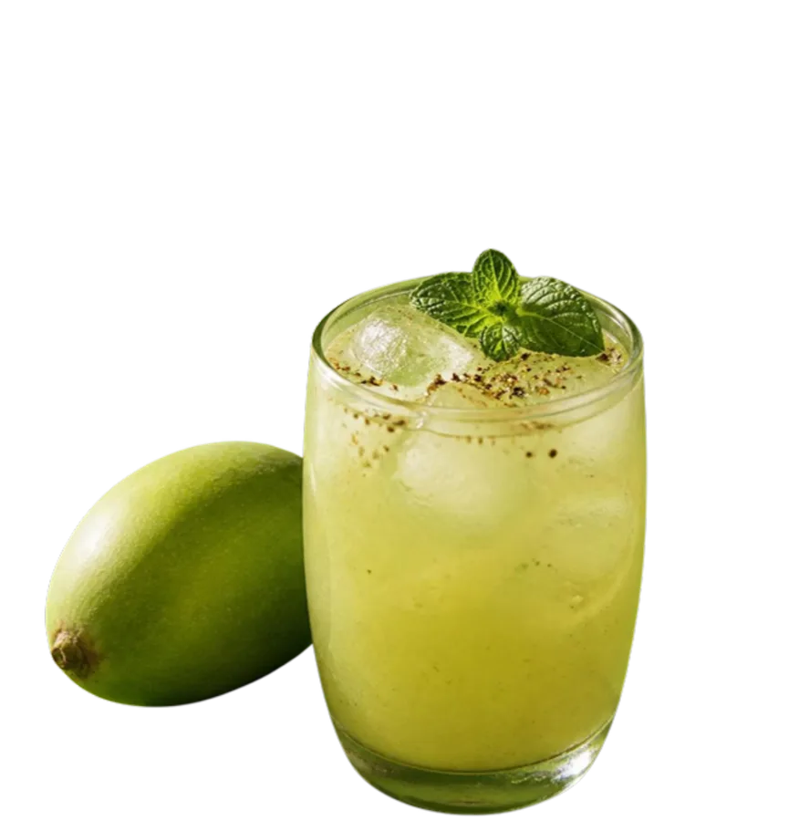
Aam panna
आम पन्नाUnripe green mango, cooked and mashed into a sour-sweet, lightly spiced drink with cumin, black salt and mint. A summer cooler.
What’s in it- Raw green mangoes · from the market
- Sugar · from your cupboard
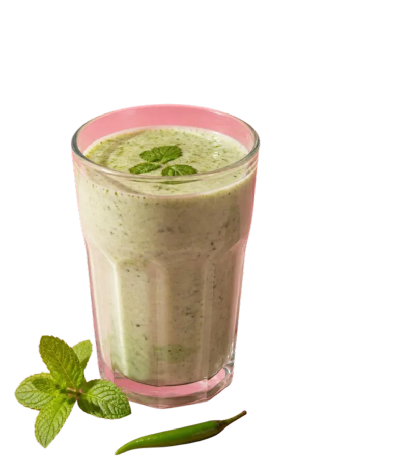
Borhani
বোরহানিA frothy, savory yogurt drink tinged green with mint and coriander. It shows up at Bangladeshi feasts next to the biryani.
What’s in it- Sour plain yogurt · from your fridge
- Ground spices · from your pantry
- Salt · from your cupboard
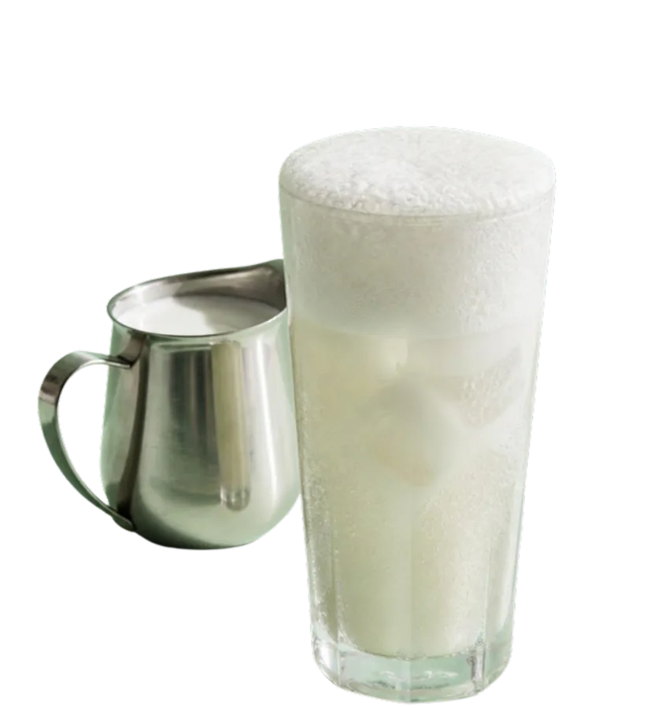
Doodh soda
دودھ سوڈاCold milk, sugar and a lemon-lime soda, poured over ice. A summer drink in the milk shops of Punjab, and especially popular during Ramadan.
What’s in it- Cold whole milk · from your fridge
- Sugar · from your cupboard
- Crushed ice · from your freezer
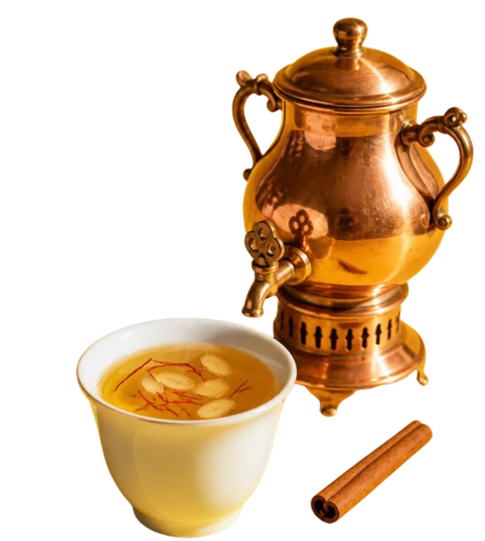
Kahwa
قہوہGreen tea infused with cardamom, cinnamon and saffron, then crowned with crushed almonds. A Kashmiri winter favorite, poured from a samovar.
What’s in it- Almonds · from your pantry
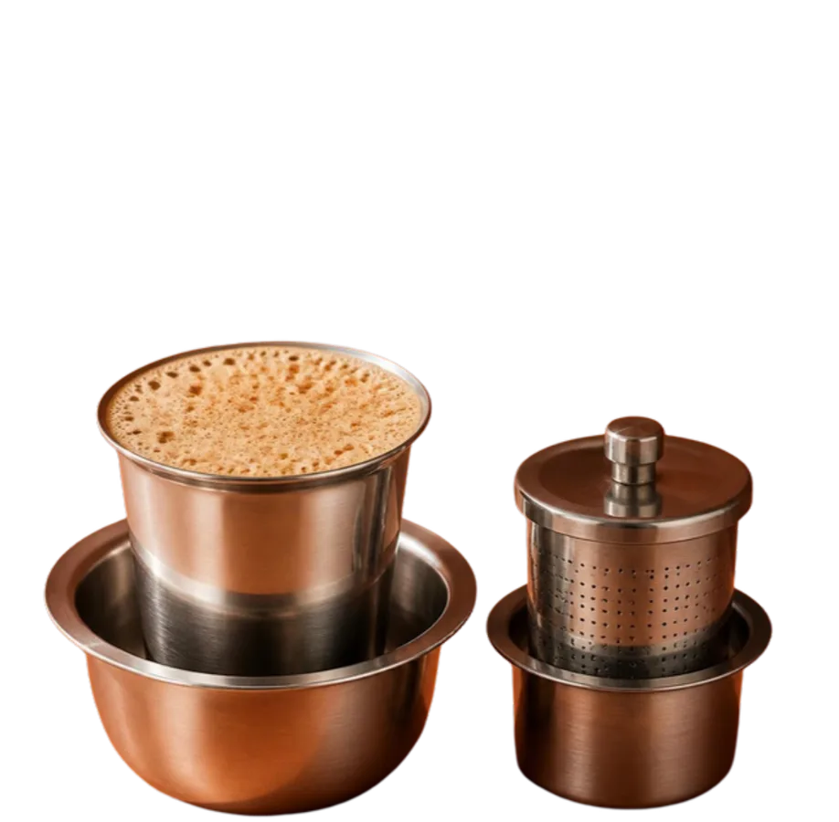
South Indian filter coffee
ஃபில்டர் காபிA strong coffee decoction, made by slow percolation, mixed with boiling milk and sugar and drunk hot from a steel tumbler.
What’s in it- Whole milk · from your fridge
- Sugar · from your cupboard